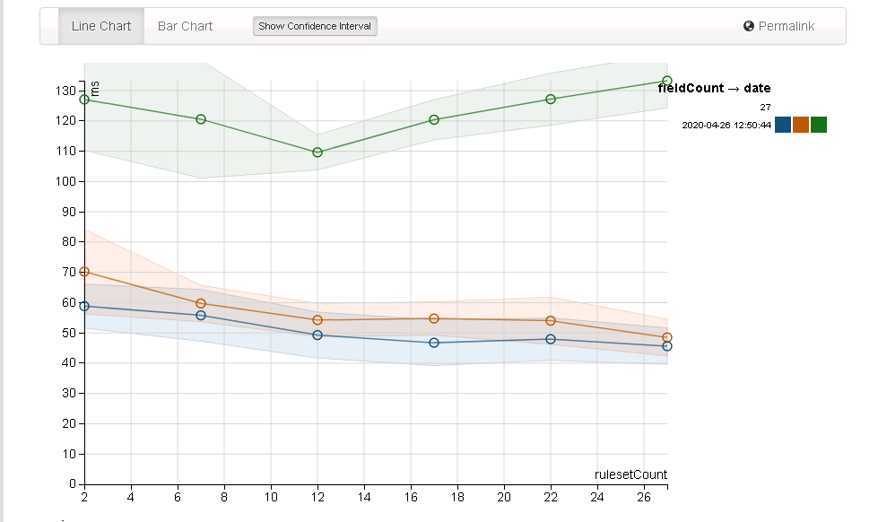
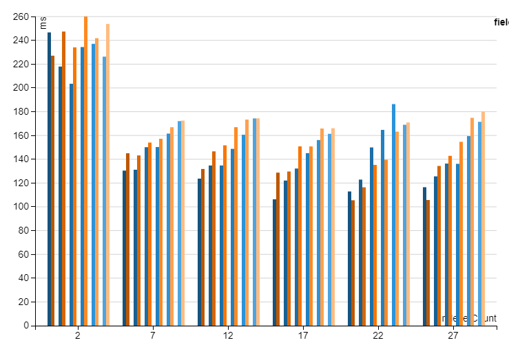
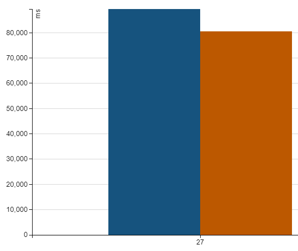
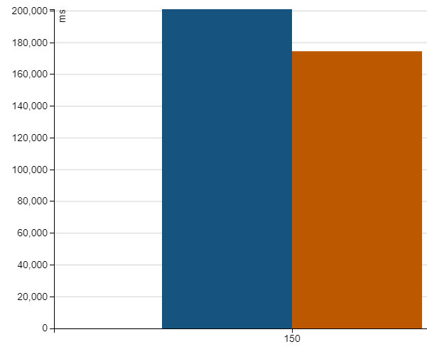

How should rules be evaluated?¶
Performance wise there is a clear winner as to approach for generating results:

The green row is using the map function which is unfortunately the most straightforward to program. The blue is the baseline of processing a row without DQ and the orange is using withColumn.
withColumn can use UDFs or inbuilt Catalyst style functions - the latter giving better performance and ability to more naturally integrate with spark, this review echos the findings and hinting at the effects of catalyst.
Overall storage winner is nested columns, it has lower storage costs, is as fast as json to serialize (via an Expression) and faster to query with predicate push down support for faster filtering. Details of the analysis are below.
Note
Using withColumn is strongly discouraged, it very quickly introduces performance issues in spark code, prefer to use select and the Quality transform functions. A large part of the performance hit for using UDFs over Expressions is due to the conversion from user types to InternalRow - this cannot be avoided.
Catalyst Expression Performance¶
This diagram illustrates the overhead of cost of using Expressions using a simulated complexity of rule suites with increasing number of column checks ( c here is the column number, for a simple even check ): ($c % 2) = 0

This measurement against 1k rows shows for the last column 230ms for 27 rules each with 27 columns applied, i.e. 0.23 ms per row for 84 rules total (albeit simple rules) on a single 4 core machine (24G heap). Orange representing the default compiled evaluations.
However, this doesn't illustrate very well how things can scale. Running the 27 rules against 1m rows we see:

with a mean time of 80,562ms for 1m rows that's 0.08ms per row for 27 rules, again orange representing the default options for compilation. Conversely, the same test run against 1m rows without rules has a mean of 14,052 - so 66,510ms overhead for processing 27m rules (i.e. 0.0025ms per simple rule).
Stepping the complexity up a bit to 150 columns at 100k (24G ram) with a baseline no rules time of 15,847ms. Running with rules gives:

so for compiled at a mean of 174,583ms we have 15m rules run at 0.011ms per rule. So although increased rule count obviously generates more work the overhead is still low per each rule even with larger counts and the benefit of the default (orange) compilation is visible (see the note at the bottom for when this may not be the case).
When using RuleEngineRunners you should try to re-use output expressions (RunOnPassProcessor) wherever possible to improve performance.
Sometimes Interpreted Is Better
For very large complex rules (tested sample is 1k rules with over 50k expressions - over 30s compilation for a show and write) compilation can dominate time, as such you can set forceRunnerEval to true on RuleRunner and RuleEngineRunner to skip compilation. While compilation can be slow the execution is heavily optimised with minimal memory allocation, as such you should balance this out when using huge RuleSuites.
Disabling compilation entirely is not a great idea
Disabled generation, via ruleRunner(ruleSuite, compileEvals = false, forceRunnerEval = true), takes 208,518ms for 150 rules over 100k data - 34s longer than the default, this of course adds up fast over millions of rows.
Created: April 19, 2024 15:40:38